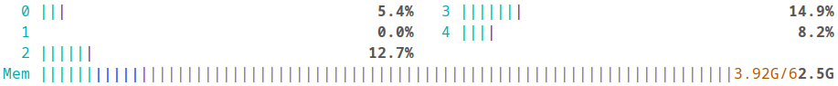

<!doctype html>
<html>
  <head>
    <meta charset="utf-8">
    <meta name="viewport" content="width=device-width, initial-scale=1.0, maximum-scale=1.0, user-scalable=no">

    <title>If You Can't Measure It, You Can't Improve It</title>

    <link rel="stylesheet" href="reveal.js/css/reveal.css">
    <link rel="stylesheet" href="reveal.js/css/theme/white.css" id="theme">
    <link rel="stylesheet" href="extensions/plugin/line-numbers/line-numbers.css">
    <link rel="stylesheet" href="extensions/css/highlight-styles/default.css">
    <link rel="stylesheet" href="extensions/css/custom.css">

    <style>
      .reveal h1, .reveal h2, .reveal h3, .reveal h4, .reveal h5 { text-transform: none; }
    </style>

    <script>
      var link = document.createElement( 'link' );
      link.rel = 'stylesheet';
      link.type = 'text/css';
      link.href = window.location.search.match( /print-pdf/gi ) ? 'reveal.js/css/print/pdf.css' : 'reveal.js/css/print/paper.css';
      document.getElementsByTagName( 'head' )[0].appendChild( link );

      function set_address(self, remote, local) {
        if (window.location.search.match("local")) {
          self.href = local;
        } else {
          self.href = remote;
        }
      }
    </script>

    <meta name="apple-mobile-web-app-capable" content="yes">
    <meta name="apple-mobile-web-app-status-bar-style" content="black-translucent">
  </head>

  <body>
    <div class="reveal">
      <div class="slides">

          <section data-markdown=""
                   data-separator="^====+$"
                   data-separator-vertical="^----+$">
          <script type="text/template">
<!-- .element: data-background-image="images/title.png" data-background-size="100%" data-background-color="black" -->

----

#### Disclaimer
<!-- .element: style="text-align:left" -->

```
Focused on x86-64/linux
Powered by linux-perf + perf-labs/perf
```

<p align="left">

</p>

##### - Intel - https://www.intel.com/content/www/us/en/developer/articles/technical/intel-sdm.html
<!-- .element: style="text-align:left; margin: 5px 0; font-size:22px" -->
##### - AMD - https://docs.amd.com/v/u/en-US/40332-PUB_4.08
<!-- .element: style="text-align:left; margin: 5px 0; font-size:22px" -->
##### - ARM - https://developer.arm.com/documentation/ddi0487/latest
<!-- .element: style="text-align:left; margin: 5px 0; font-size:22px" -->
##### - Apple - https://developer.apple.com/documentation/apple-silicon/cpu-optimization-guide
<!-- .element: style="text-align:left; margin: 5px 0; font-size:22px" -->

---

```asm
apt install linux-tools-$(uname -r)
pip install git+https://github.com/perf-labs/perf.git
```
<!-- .element: style="text-align:left; margin: 5px 0px; font-size:16px;" -->

----

### Motivation
<!-- .element: style="text-align:left" -->

----


##### What affects performance?

<!-- .element: style="text-align:left;" -->

```cpp
 Adding a 'try/catch' that never throws?
 Adding a 'branch' that is never taken?
 Adding an 'unused function'?
```
<!-- .element: class="fragment" -->

```cpp
 Removing 'dead code'?
 Enabling 'debug symbols' in an optimized build?
```
<!-- .element: class="fragment" -->

```cpp
 Running with 'instrumentation, tracing, profiling' enabled?
 Running as a 'different user'?
 ...
```
<!-- .element: class="fragment" -->

Does it matter, and if so, why and how much?
<!-- .element: style="text-align:right; font-size:22px;" -->

----

#### Microprocessor trends
<!-- .element: style="text-align:left" -->

<table style="margin:0; padding:0; border-collapse:collapse; width:100%;">
  <tr>
  <td>
  <pre style="font-size:14px">
(⬆️) Transistors
 - More Cores
 - More Caches
 - Improved Execution
 - Improved Parallelism&nbsp;
 - ...</pre><pre style="font-size:14px">
(~) Frequency
 - Base:  3–5 ghz
 - Boost: 5–6 ghz
 - Overclocked: ~9 ghz</pre>
  </td>
  <td>
    
  </td>
</tr>
</table>

https://github.com/karlrupp/microprocessor-trend-data
<!-- .element: style="text-align:left; margin: 5px 0px; font-size:22px;" -->

<!--[Moore’s Law and Dennard Scaling](https://wgropp.cs.illinois.edu/courses/cs598-s15/lectures/lecture15.pdf)-->

----

#### Hardware effects
<!-- .element: style="text-align:left" -->


https://chipsandcheese.com
<!-- .element: style="text-align:left; margin: 0px 0px; font-size:22px;" -->

----

#### System effects 
<!-- .element: style="text-align:left" -->

<p align="left">

</p>

https://makelinux.github.io/kernel/map
<!-- .element: style="text-align:left; margin: 0px 0px; font-size:22px;" -->

----

#### Performance Is Not A Number!
<!-- .element: style="text-align:left" -->


[Producing Wrong Data Without Doing Anything Obviously Wrong](https://users.cs.northwestern.edu/~robby/courses/322-2013-spring/mytkowicz-wrong-data.pdf)
<!-- .element: style="text-align:left; font-size:20px;" -->

----

#### "If You Can't Measure It, You Can't Improve It!"
<!-- .element: style="text-align:left;" -->

— Lord Kelvin (William Thomson)
<!-- .element: style="text-align:left; font-size:22px;" -->

----

#### Performance [Monitoring Unit]
<!-- .element: style="text-align:left" -->


```
 CPU                      Intel        Amd          Arm
  ├─ Timestamp Counter    RDTSC/RDTSCP RDTSC/RDTSCP CNTVCT_EL0/CNTPCT_EL0
  ├─ Performance Counters RDPMC        RDPMC        PMCCNTR_EL0/PMEVCNTRN_EL0
  ├─ Event sampling       PEBS         IBS          SPE
  ├─ Branch Recording     LBR          LBR          BRBE
  └─ Processor Trace      PT           -            ETM (CoreSight)
```
<!-- .element: style="text-align:left; font-size:16px;" -->

----

#### Modern CPUs are `primarily` bottlenecked by
<!-- .element: style="text-align:left" -->

```cpp
- Data access
- Branch prediction
- Instruction supply
```

----

#### Top down Microarchitecture Analysis Method [[Intel](https://rcs.uwaterloo.ca/~ali/cs854-f23/papers/topdown.pdf), [AMD](https://docs.amd.com/r/en-US/57368-uProf-user-guide/7.9.-Micro-Architecture-Analysis), [ARM](https://support.arm.com/documentation/109542/02/Arm-Topdown-methodology), ...]
<!-- .element: style="text-align:left; font-size: 32px;" -->

<table>
<tr>
<td>

<td>
<pre style="font-size:12px;margin: 0 0;"><code>Level Category Desktop(%) Server(%) HPC(%)
----- -------- ---------- --------- ------
1 retiring          20–50     10–30  30–70
1 bad speculation    5–10      5–10    1–5
1 frontend bound     5–10     10–25   5–10
1 backend bound     20–40     20–60  20–40</code></pre>
</td>
</tr>
</table>

```sh
perf stat --topdown -- ./a.out # --control=fifo:/dev/shm/perf --delay=-1 -- ./a.out
```
<!-- .element: style="text-align:left; font-size:15px;" -->

```
2,736,393      topdown-retiring:u       #     26.7% retiring
  482,892      topdown-bad-spec:u       #      4.7% bad speculation
  965,785      topdown-fe-bound:u       #      9.4% frontend bound
6,076,402      topdown-be-bound:u       #     59.2% backend bound
```
<!-- .element: style="text-align:left; font-size:15px;" -->

https://github.com/andikleen/pmu-tools/wiki/toplev-manual
<!-- .element: style="text-align:left; font-size:15px;" -->

----

##### Sampling [[linux-perf](https://perf.wiki.kernel.org), [intel-vtune](https://www.intel.com/content/www/us/en/docs/vtune-profiler), [amd-uprof](https://www.amd.com/en/developer/uprof.htm), ...]
<!-- .element: style="text-align:left;" -->

```sh
perf record -- ./a.out
perf script | stackcollapse-perf.pl | flamegraph.pl
```

```asm
main;parse;analyze 3
main;render 7
...
```
<!-- .element: style="text-align:left; font-size:10px;" -->


----

##### Instrumentation [[bpfrace](https://github.com/bpftrace/bpftrace), [bcc](https://github.com/iovisor/bcc), ...]
<!-- .element: style="text-align:left;" -->

```cpp
sudo bpftrace -e '
    uprobe:./a.out:func { @start[tid] = nsecs; } # INT3
    uretprobe:./a.out:func
    {
        @latency = hist((nsecs - @start[tid]) / 1000);
        delete(@start[tid]);
    }
'
```

```
@latency_us:
[64, 128)            2 |@@               |
[128, 256)           5 |@@@@@@           |
[256, 512)          12 |@@@@@@@@@@@@@@@@ |
[512, 1K)            8 |@@@@@@@@@@       |
[1K, 2K)             3 |@@@@             |
```

----

##### Instrumentation [[llvm-xray](https://llvm.org/docs/xray.html), [tracy](https://github.com/wolfpld/tracy), ...]
<!-- .element: style="text-align:left;" -->

<table style="border-collapse:collapse; width:100%;">
  <tr>
      <td style="width:25%">
          <pre style="font-size:14px">int func() { return 42; }</pre>
      </td>
      <td style="width:25%">
          <pre style="font-size:14px">-fxray-instrument</pre>
      </td>
      <td style="width:25%">
          <pre style="font-size:14px">__xray_patch</pre>
      </td>
  </tr>
  <tr>
  <td>
      <pre style="font-size:14px">
func:
  mov eax, 42
  ret
      <br/>
      </pre>
  </td>
  <td>
      <pre style="font-size:14px">
func:
  nopw
  mov eax, 42
  nopw
  ret
      </pre>
  </td>
  <td>
      <pre style="font-size:14px">
func:
  jmp __xray_FunctionEntry
  mov eax, 42
  jmp __xray_FunctionExit
  ret
      </pre>
  </td>
</tr>
</table>

<!-- .element: style="text-align:left; font-size:14px;" -->
<p align="left">
<p style="text-align:left; font-size:18px;margin: 0px 0px;">Metrics</p>

</p>

----

##### Tracing [[linux-perf](https://perf.wiki.kernel.org), [magic-trace](https://github.com/janestreet/magic-trace), ...]
<!-- .element: style="text-align:left" -->

```
perf probe --exec a.out --add func # INT3
```

```sh
perf record \
    --event intel_pt/tsc,cyc=1/u \
    --filter 'filter func @ ./a.out' \
    --pid=$(pidof a.out) \
    --mmap-pages 512,4096
```

```
perf script --itrace=i --insn-trace=disasm -F+ipc
```

```
push   %rbp                          —
mov    %rsp,%rbp                     —
sub    $0x20,%rsp                   1.00
mov    (%rdi),%rax                  0.50
imul   %rcx,%rax                    0.33
add    %rax,%rdx                     —
leave                               1.00
ret                                  —
```

Requires Intel-PT or ARM ETM (CoreSight)
<!-- .element: style="text-align:right; font-size:16px;" -->

----

##### Machine-Code Analysis [[llvm-mca](https://llvm.org/docs/commandguide/llvm-mca.html), [uica](https://uica.uops.info), ...]
<!-- .element: style="text-align:left;" -->

```
llvm-mca -mcpu=sapphirerapids snippet.asm
```

```cpp
[1] [2] [3]  [4] [5] [6]   Instructions:
 1   1  0.50               shl  edi, 3
 2   5  0.50  *            bzhi eax, dword ptr [rsi], edi
 1   3  1.00               imul eax, eax, 2893426669        // magic
 1   1  0.50               shr  eax, 29
 1   1  0.50               mov  ecx, 0b001100000010011      // lookup table
 1   1  0.50               shrx eax, ecx, eax
 1   1  0.25               and  eax, 0b111
 1   5  0.50          U    ret

[1]: #uOps    [2]: Latency   [3]: RThroughput
[4]: MayLoad  [5]: MayStore  [6]: HasSideEffects (U)
```
<!-- .element: style="text-align:left; font-size:16px;" -->

```
llvm-mca -resource-pressure   # port usage:       [0] 1.50 [1] 0.50 [5] 1.00 ...
llvm-mca -timeline            # pipeline diagram: D=dispatched, e=executing, E=executed, R=retired
```
<!-- .element: style="text-align:left; font-size:14px;" -->

Scheduling Models - https://github.com/llvm/llvm-project/tree/main/llvm/lib/Target
<!-- .element: style="text-align:left; font-size:16px;" -->

https://www.uops.info/instructions.xml
<!-- .element: style="text-align:left; font-size:16px;" -->

`MCA` results are estimates and will not perfectly reflect real-world performance
<!-- .element: style="text-align:right; font-size:16px;" -->

----

##### Simulation [[callgrind](https://valgrind.org/docs/manual/cl-manual.html), [gem5](https://www.gem5.org), ...]
<!-- .element: style="text-align:left;" -->

```cpp
```

```
valgrind --tool=callgrind       # 5x-100x overhead
         --cache-sim=yes
         --branch-sim=yes
         --collect-jumps=yes
         --dump-instr=yes       #define CALLGRIND_START_INSTRUMENTATION
         --instr-atstart=no     #define CALLGRIND_STOP_INSTRUMENTATION
```
<!-- .element: style="text-align:left; font-size:20px;" -->

----

##### Benchmarking [[google/benchmark](https://github.com/google/benchmark), [likwid](https://github.com/rrze-hpc/likwid), ...]
<!-- .element: style="text-align:left" -->

```cpp
/**
 * [+] iteration speed (isolation, simplicity)
 * [-] correlation (bias, noise, codgen, ...)
 */
auto bench(invocable auto code, integral auto samples, integral auto iterations) {
    vector<std::chrono::steady_clock::duration> stats(samples);
    for (auto s = 0u; s < samples; ++s) { // statistics
        const auto start = chrono::steady_clock::now(); // perf counters
        for (auto i = 0u; i < iterations; ++i) {
            keep(invoke(code)); // optimizing compiler
        } // latency vs. throughput
        const auto stop = chrono::steady_clock::now();
        stats[s] = (stop - start) / iterations;
    }
    return stats;
}
```
<!-- .element: style="text-align:left; font-size:15px;" -->

<p align="left">

</p>

----

##### `"what if" rule`
<!-- .element: style="text-align:left" -->

<table>
<tr>
<td>

</td>
<td>
<pre><code>What if data spikes?
What if the environment inherently has jitter?
What if caches aren’t as hot?
What if branches aren’t as predictable?
What if the code/data layout changes?
What if ...?</code></pre>
</td>
</tr>
</table>

----

##### `"what if" rule`
<!-- .element: style="text-align:left" -->

<table>
<tr>
<td>

</td>
<td>
<pre><code>What if we could answer "what if?"         </code></pre>
</td>
</tr>
</table>

----

#### Symbolic Benchmarking
<!-- .element: style="text-align:left" -->

```python
Machine Code
  → Symbolic Exploration
      → Data Synthesis
          → Native Execution
```
<!-- .element: style="text-align:left; font-size:22px;" -->

```
┌──────────────────┐   ┌─────────────────┐   ┌───────────────┐   ┌────────────────┐
│ mov eax, [r11]   │ → │ {reg: r11}      │ → │ r11 = [0,3,5] │ → │ mmap / jit     │
│ add eax, [r11+4] │   │ {mem: [r11]+4}  │   │ [r11] = [1,3] │   │ [cache/branch] │
└──────────────────┘   └─────────────────┘   └───────────────┘   └────────────────┘
 asm/cpp/rust/zig       exploration           data synthesis      native execution
```
<!-- .element: style="text-align:left; font-size:18px;" -->

----

#### `Symbolic Exploration`
<!-- .element: style="text-align:left" -->

----

##### Explore
<!-- .element: style="text-align:left" -->

```python
def explore(project, start, end):                                      # python
    state = project.factory.blank_state(addr=start)

    state.inspect.b("mem_read",  when=angr.BP_AFTER, action=on_mem_read)
    state.inspect.b("mem_write", when=angr.BP_AFTER, action=on_mem_write)

    simgr = project.factory.simulation_manager(state)
    simgr.explore(find=end)

    return simgr.found + simgr.active + simgr.deadended
```
<!-- .element: style="text-align:left; font-size:20px;" -->

https://docs.angr.io/en/latest/core-concepts/symbolic.html
<!-- .element: style="text-align:left; font-size:20px;" -->

----

##### Explore
<!-- .element: style="text-align:left" -->


<table>
<tr>
<td><pre style="font-size:19px;"><code>
[[gnu::optimize("O3")]] constexpr auto fizz_buzz(int n) {
       if (n % 15 == 0) { return "FizzBuzz"; }
  else if (n % 3  == 0) { return "Fizz";     }
  else if (n % 5  == 0) { return "Buzz";     }
  return "Unknown";
}
</pre></code></td>
<td><pre style="font-size:15px;"><code>
imul eax, edi, 0xeeeeeeef
lea rdx, [rip + 0xeb3]
add eax, 0x8888888
cmp eax, 0x11111110
jbe 0x40119a
imul eax, edi, 0xaaaaaaab
lea rdx, [rip + 0xea3]
add eax, 0x2aaaaaaa
cmp eax, 0x55555554
jbe 0x40119a
imul edi, edi, 0xcccccccd
lea rdx, [rip + 0xe8f]
lea rax, [rip + 0xe7e]
add edi, 0x19999999
cmp edi, 0x33333332
cmovbe rdx, rax
mov rax, rdx
ret
</pre></code></td>
</tr>
</table>

```
solutions = explore(project, fizz_buzz, fizz_buzz+size)
```

```
{'state': <SimState @ 0x40119d>, 'reg': {'rdi': <BV64 rdi_12_64>}, 'mem_read': [], 'mem_write': []}
{'state': <SimState @ 0x40119d>, 'reg': {'rdi': <BV64 rdi_12_64>}, 'mem_read': [], 'mem_write': []}
{'state': <SimState @ 0x40119d>, 'reg': {'rdi': <BV64 rdi_12_64>}, 'mem_read': [], 'mem_write': []}
{'state': <SimState @ 0x40119d>, 'reg': {'rdi': <BV64 rdi_12_64>}, 'mem_read': [], 'mem_write': []}
```
<!-- .element: style="text-align:left; font-size:16px;" -->

----

#### `Data Synthesis`
<!-- .element: style="text-align:left" -->

----

##### `Solutions`
<!-- .element: style="text-align:left" -->

```python
for solution in solutions:                                      # python
    for state in solution["state"]:
        for reg in state["reg"]:
            print(state.solver.eval_up_to(reg, 3))
```
<!-- .element: style="text-align:left; font-size:22px;" -->

```cpp
rdi: 0, 15, 30 // rdi % 15 == 0
rdi: 3,  6,  9 // rdi % 3  == 0
rdi: 5, 10, 20 // rdi % 5  == 0
rdi: 1,  2,  4 // else
```
----

##### `Problem-space reduction`
<!-- .element: style="text-align:left" -->

```
b.attach_uprobe(name=BINARY, sym="steady", fn_name="trace_function")
...
```

```cpp
perf record -e branch-misses,branch-refrences
```

```cpp
perf bench func fizz_buzz -x a.out --data.rdi=[1,2,3]
```

----

#### `Native Execution`
<!-- .element: style="text-align:left" -->

----

##### `Latency vs. Throughput`
<!-- .element: style="text-align:left" -->

<table>
<tr>
<td>

</td>
<td>
<pre><code style="width:760px">Latency
 ├─ Time it takes for a single operation to complete
 └─ ns/op
</code></pre>
</td>
</tr>
</table>

<table>
<tr>
<td>

</td>
<td>
<pre><code style="width:760px">Throughput
 ├─ Total number of operations
 ├  completed in a given amount of time
 ├─ ops/s, Gb/s, ...
 └─ ns/ops - reciprocal throughput = inverse throughput
</code></pre>
</td>
</tr>
</table>

----

##### Benchmarking Harness
<!-- .element: style="text-align:left" -->

```asm
# rdtsc/rdtscp or rdpmc
start:                  stop:
  lfence                  rdtscp
  rdtsc                   lfence
  lfence
```
<!-- .element: style="text-align:left; font-size:19px;" -->

```asm
{setup}
start
{code}
stop
{teardown}
```
<!-- .element: style="text-align:left; font-size:14px;" -->

https://gitlab.com/x86-psabis/x86-64-abi/-/jobs/artifacts/master/raw/x86-64-abi/abi.pdf
<!-- .element: style="text-align:left; font-size:22px;" -->

----

##### Benchmarking Harness [unroll vs. repeat]
<!-- .element: style="text-align:left" -->

`--backend unroll # (2N × code - N × nop) / N   = per-copy cost` https://github.com/andreas-abel/nanoBench
<!-- .element: style="text-align:left; font-size:16px;" -->

```
perf bench bench 'imul eax, 42' --backend unroll
add mov eax, 42            add mov eax, 42
add mov eax, 42            add mov eax, 42
add mov eax, 42            add mov eax, 42
add mov eax, 42            add mov eax, 42
add mov eax, 42            add mov eax, 42
add mov eax, 42            add mov eax, 42
add mov eax, 42
add mov eax, 42
add mov eax, 42
add mov eax, 42
```

`--backend repeat # one call fn  - one call nop  = fn cost`
<!-- .element: style="text-align:left; font-size:16px;" -->

```cpp
perf bench asm -D
measured (code) - overhead (nop) = true cost
```

----

##### Hardware effects
<!-- .element: style="text-align:left" -->

<table>
<tr>
<td><pre style="font-size:15px"><code>
0x0080: void unused();                     // layout
0x0110: void func(auto value) {            // alignment
0x0112:   auto var = ...;                  // stack
0x0114:   for (...) {                      // alignment
0x0118:     auto i = lookup_table[value];  // memory
0x011C:     if (i == var) {                // branch
0x0120:         ...
0x0124:     }
0x0128:   }
0x0128: }                                  // stack
0x1000: lookup_table:                      // layout
        ...
</code></pre></td>
<td>

</td>
</tr>
</table>
<!-- .element: style="text-align:left; font-size:20px;" -->

https://people.cs.umass.edu/~emery/pubs/stabilizer-asplos13.pdf
<!-- .element: style="text-align:left; font-size:22px;" -->

----

#### Cache effects
<!-- .element: style="text-align:left" -->

```cpp
perf bench asm 'mov r11, [rax]' # lookup_table[value]
```

```python
for addr, size in reads + writes:
    refresh(level, addr)
```

```cpp
dL1:   4ns
dL2:  13ns
dL3:  75ns
RAM: 294ns
```

https://www.akkadia.org/drepper/cpumemory.pdf
<!-- .element: style="text-align:left; font-size:22px;" -->

----

##### Cache effects
<!-- .element: style="text-align:left" -->

```cpp
template<Level level>
auto refresh(const void* addr) {
    if constexpr (level == Level::L1) {
        load(addr);                                 // L1
        fence();
    } else if constexpr (level == Level::L2) {
        flush(addr);                                // RAM
        fence();
        settle();
        prefetch<Level>(addr);                      // prefetcht1 hint
    } else if constexpr (level == Level::L3) {
        load(addr);                                 // L1
        demote(addr);                               // cldemote hint
    } else {
        flush(addr);                                // RAM
        fence();
    }
    settle();
}
```
<!-- .element: style="text-align:left; font-size:20px;" -->

```asm
PREFETCHNTA Non-temporal
PREFETCHT0  Hint into all cache levels (L1 priority)
PREFETCHT1  Hint into L2/L3, lower L1 priority
PREFETCHT2  Hint into L2/L3 with even lower urgency
CLDEMOTE    Hint into more distant level (Sapphire Rapids / Xeon, ...)
```
<!-- .element: style="text-align:left; font-size:12px;" -->

----

##### Cache effects
<!-- .element: style="text-align:left" -->

```cpp
             1000 addresses
                    │
        ┌───────────┴───────────┐
        │                       │
       L1                      800
      200                       │
   (20% total)       ┌─────────┴─────────┐
                     │                   │
                    L2                  560
                   240                   │
             (30% of 800)     ┌──────────┴──────────┐
                              │                     │
                              L3                    RAM
                             224                    336
                       (40% of 560)
```
<!-- .element: style="text-align:left; font-size:15px;" -->

```python
for i in range(l1):
    mov addresses[i], [reg]
    mfence
for i in range(l2):
    cflushopt addresses[i + l1]
    prefetcht1
    mfence
for i in range(l3):
    addr = i + l1 + l2
    mov addresses[addr], [reg]
    cldemote addresses[addr]
    mfence
for i in range(ram):
    addr = i + l1 + l2 + l3
    cflushopt addresses[addr]
    mfence
settle
```
<!-- .element: style="text-align:left; font-size:12px;" -->

----

##### Branch effects
<!-- .element: style="text-align:left" -->

<table style="margin:0; padding:0; border-collapse:collapse; width:100%;">
  <tr>
  <td>
    
  </td>
  <td>
     <pre style="font-size:10px"><code>
std::array<branch, 1 << 12> btb{};
auto predict(uint64_t ip, uint64_t target) {
    auto& e = btb[(ip >> 2) & 0xFFF]; // branch aliasing
    if (e.valid and e.tag == ip) {
        return e.hist >= 2; // 10'000 x 1/0
    }
    return target < ip ? TAKEN : NOT_TAKEN; // cold: backward taken, forward not-taken
} // update: if (!e.valid && !taken) return; // never-taken: no BTB entry allocated</code></pre>
  </td>
</tr>
</table>

<p align="left">
</p>

```
perf bench asm 'cmp r11, [rax]; je hit; nop; hit:' --config.branch=predictable --data[0x0001]=[1,2,3]
perf bench asm 'cmp r11, [rax]; je hit; nop; hit:' --config.branch=unpredictable
```
<!-- .element: style="text-align:left; font-size:18px;" -->

```python
for solution in solutions:
    value = solution.eval(1)
    bench(code, [repeat(value, N) if predictable else shuffle(values)])
```

----

##### Branch effects
<!-- .element: style="text-align:left" -->

```cpp
auto value = lut[i];
```

```cpp
perf bench asm 'add r11, [rax]'
  --march sapphirerapids
  --config.memory.cache.dL1=100
  --data.r11=0
  --data.rax=0x4000
  --data.memory.0x4000=1234
  --branch=predictable
```

----

##### Codegen effects
<!-- .element: style="text-align:left" -->

```cpp
[[gnu::aligned(64), gnu::hot]]
void hot_func(const int* v, int n) {
    [[clang::code_align(64)]] for (int i = 0; i < n; ++i) {
        sum += table[v[i] & 63];
    }
    // ...
}
```

```sh
perf bench func hot_func --exec a.out
```
<!-- .element: style="text-align:left; font-size:20px;" -->

----

##### `PERF_LABEL` [regions]
<!-- .element: style="text-align:left;" -->

```cpp
#define PERF_LABEL(name)
    asm volatile(
        ".pushsection perf.label, \"aw?\", @progbits\n"
        ".quad 0f\n"
        ".asciz \"" #name "\"\n"
        ".popsection\n"
        "0:\n"
    ); name:
```
<!-- .element: style="text-align:left;font-size:20px" -->

inlined multiple times
<!-- .element: style="text-align:right; font-size:22px;" -->
----

```cpp
auto hot_path(...) {
    PERF_LABEL(hot_begin);
    ...
    PERF_LABEL(hot_end);
}
```
<!-- .element: style="text-align:left;font-size:20px" -->

```
objdump -sj .perf.label <file>
```
<!-- .element: style="text-align:left;font-size:20px" -->

`rust,zig` compatible
can be across function boundries
can be inlined multiple times
<!-- .element: style="text-align:left; font-size:22px;" -->

----

##### `JIT Code Generation`
<!-- .element: style="text-align:left" -->

```python
page = mmap(
    -1,
    len(code_bytes),
    prot=PROT_READ|PROT_WRITE|PROT_EXEC,
    flags=MAP_PRIVATE|MAP_ANONYMOUS
)
page.write(bench) # harness + code
CFUNCTYPE((addressof(from_buffer(page)))() # execute
```

`[.jitdata] /tmp/perf-{pid}.map`
<!-- .element: style="text-align:left; font-size:22px;" -->

----

```cpp
perf record -- perf bench --save example.s --save example.o
perf bench func hot_path --exec hat_path.out -c hot_path.o
```


----

### Case Studies
<!-- .element: style="text-align:left" -->

----

##### `cpu-info`
<!-- .element: style="text-align:left" -->

```
lstopo
```
<!-- .element: style="text-align:left;font-size:14px" -->

<p align="left">

</p>
<!-- .element: style="text-align:left;font-size:14px" -->

----

##### `cpu-info`
<!-- .element: style="text-align:left" -->

```
perf info cpu
```
<!-- .element: style="text-align:left;font-size:14px" -->

```
cpu  core  numa  arch                                 vendor   model  family  stepping  freq    L1i   L1d   L2      L3
  0     0     0  x86_64  12th Gen Intel(R) Core(TM) i7-12650H    154       6         3  400Mhz  32Kb  48Kb  1280Kb  24576Kb
  1     4     0  x86_64  12th Gen Intel(R) Core(TM) i7-12650H    154       6         3  400Mhz  32Kb  48Kb  1280Kb  24576Kb
  2     8     0  x86_64  12th Gen Intel(R) Core(TM) i7-12650H    154       6         3  400Mhz  32Kb  48Kb  1280Kb  24576Kb
  3    12     0  x86_64  12th Gen Intel(R) Core(TM) i7-12650H    154       6         3  400Mhz  32Kb  48Kb  1280Kb  24576Kb
  4    16     0  x86_64  12th Gen Intel(R) Core(TM) i7-12650H    154       6         3  400Mhz  32Kb  48Kb  1280Kb  24576Kb
  5    20     0  x86_64  12th Gen Intel(R) Core(TM) i7-12650H    154       6         3  400Mhz  32Kb  48Kb  1280Kb  24576Kb
  6    28     0  x86_64  12th Gen Intel(R) Core(TM) i7-12650H    154       6         3  400Mhz  64Kb  32Kb  2048Kb  24576Kb
  7    29     0  x86_64  12th Gen Intel(R) Core(TM) i7-12650H    154       6         3  400Mhz  64Kb  32Kb  2048Kb  24576Kb
  8    30     0  x86_64  12th Gen Intel(R) Core(TM) i7-12650H    154       6         3  400Mhz  64Kb  32Kb  2048Kb  24576Kb
  9    31     0  x86_64  12th Gen Intel(R) Core(TM) i7-12650H    154       6         3  400Mhz  64Kb  32Kb  2048Kb  24576Kb
```
<!-- .element: style="text-align:left;font-size:12px" -->

##### https://en.wikichip.org / cpuid{family:6, model:154, stepping:3}
<!-- .element: style="text-align:left;font-size:14px" -->

----

##### Tuning [[Performance Tuning Guide](https://docs.redhat.com/en/documentation/red_hat_enterprise_linux/7/html/performance_tuning_guide/index)]
<!-- .element: style="text-align:left" -->


```cpp
perf bench asm 'rdtsc' | perf plot -t bar
```

<p align="left">

</p>

----

##### Sanity-Checks [measured vs. documented]
<!-- .element: style="text-align:left" -->

<!--```cpp-->
<!--Measured vs. Spec-->
<!--- instructions latency/rthroughput/...-->
<!--- dL1/dL2/dL3 load/store latency/bandwidth-->
<!--- branch misprediction penalty-->
<!--- max(µops/cycle) vs. dispatch width-->
 <!--...-->
<!--```-->

```cpp
perf bench asm 'imul eax, 0' --mode latency -e cycles
perf bench asm 'add  eax, 0' --mode latency -e cycles
perf bench asm 'sub  eax, 0' --mode latency -e cycles
perf bench asm 'cdq; idiv ecx;' --setup 'mov ecx, 2' --mode latency -e cycles
```
<!-- .element: style="text-align:left; font-size: 15px;" -->

<p align="left">

</p>

https://uops.info/table.html # vs measured
<!-- .element: style="text-align:left; font-size: 22px; margin: 5px 0px;" -->

https://llvm.org/docs/CommandGuide/llvm-exegesis.html # vs llvm optimizer
<!-- .element: style="text-align:left; font-size:20px; margin: 5px 0px;" -->

----

#### `profile → benchmark → ...`
<!-- .element: style="text-align:left; font-size: 32px;" -->

<p align="left">

</p>

```cpp
perf record ...
```
<!-- .element: style="text-align:left; font-size:16px;" -->

```cpp
bpftrace ...
```
<!-- .element: style="text-align:left; font-size:16px;" -->

```cpp
perf bench func ".*" --mode latency --exec a.out \
  -e duration_time,cycles,instructions \
  -e topdown-retiring,topdown-bad-spec,topdown-fe-bound,topdown-be-bound # seperate run
```
<!-- .element: style="text-align:left; font-size:16px;" -->

----

##### Backend bound
<!-- .element: style="text-align:left" -->

```cpp
int arr[64];
void init() { for (int i = 0; i < 64; ++i) arr[i] = i * 37; }

int process(int n) {
    int sum = 0;
    for (int i = 0; i < n; ++i) {
        int val = arr[i & 63];         // cache access
        sum += (val & 1) ? val : -val; // branch
    }
    return sum;
}
```
<!-- .element: style="text-align:left; font-size:15px;" -->

```cpp
g++16 -O3 -std=c++23 -Ilib backend_bound/memory.cpp -o memory.out
g++16 -O2 -std=c++23 -Ilib backend_bound/memory.cpp -o memory.out
clang++-22 -O2 -std=c++23 -Ilib backend_bound/memory.cpp -o memory.out
clang++-22 -O3 -std=c++23 -Ilib backend_bound/memory.cpp -o memory.out
```
<!-- .element: style="text-align:left; font-size:15px;" -->

----

##### Backend bound
<!-- .element: style="text-align:left" -->

```
perf bench func process --exec memory.out | perf plot -t ecdf
```

<p align="left">

</p>

Empirical Cumulative Distribution Function (ECDF) shows the entire distribution without losing information
<!-- .element: style="text-align:right; font-size:16px;" -->

----

##### Backend bound [memory]
<!-- .element: style="text-align:left" -->

```python
import perf                                                                               # python

for hit_rate in [100, 50, 0]:  # hot → warm → cold
    config = {
        "branch": "predictable",
        "memory": {
            "cache": {
              "dL1": {"hit_rate": hit_rate},
              "dL2": {"hit_rate": 100},
              "dL3": {"hit_rate": 100}
            }
        }
    }

    df = perf.bench(
        exec="memory.out",
        func="process",
        mode="latency",
        setup="init",
        config=config, event="cycles"
    )

    print(hit_rate, df["cycles"].describe()[["mean", "min", "max"]])
```
<!-- .element: style="text-align:left; font-size: 16px;" -->

https://jupyter.org
<!-- .element: style="text-align:left; font-size: 20px;" -->

----

##### Bad Speculation [branch]
<!-- .element: style="text-align:left" -->

```cpp
constexpr auto fizz_buzz(int n) {
       if (n % 15 == 0) { return "FizzBuzz"; }
  else if (n % 3  == 0) { return "Fizz";     }
  else if (n % 5  == 0) { return "Buzz";     }
  return "Unknown";
}
```

```
perf bench func fizz_buzz --data.rdi=0
perf bench func fizz_buzz --data.rdi=1
perf bench func fizz_buzz --data.rdi=2
perf bench func fizz_buzz --config.branch=predictable
perf bench func fizz_buzz --config.branch=unpredictable
perf bench func fizz_buzz --config.branch=unpredictable -e branch-misses
perf bench func fizz_buzz --event cycles,instructions
```
<!-- .element: style="text-align:left; font-size: 16px;" -->

```
perf view -- data/fizz_buzz
perf plot -- data/fizz_buzz
```
<!-- .element: style="text-align:left; font-size: 16px;" -->

----

##### Frontend Bound [layout]
<!-- .element: style="text-align:left" -->

```cpp
void unused();
void hot_function() {
    // ... performance critical code ...
}

void unused() {
    for (auto i = 0; i < 1000000; ++i) {
        compute();
    }
}
```

```sh
g++ -O3 func.cpp -o a.out                         # order: hot, cold
g++ -O3 func.cpp -o b.out -Wl,--sort-section=name # order: cold, hot
```
<!-- .element: style="text-align:left; font-size:16px;" -->

```sh
perf bench func hot_func --exec normal.out   --config.function.order=original
perf bench func hot_func --exec shuffled.out --config.function.order=random
```
<!-- .element: style="text-align:left; font-size:16px;" -->

----

##### Retiring [depedency-chain]
<!-- .element: style="text-align:left" -->

```cpp
[[gnu::always_inline]] int chain(int n) {
    PERF_LABEL(hot_begin); // inlined multiple times
    int x = n;
    for (int i = 0; i < 64; ++i) {
        x = x * 31 + 17; // serial dependency → latency bound
    }
    PERF_LABEL(hot_end);
    return x;
}
```

```asm
main+0x40: imul eax, eax, 31
main+0x43: add  eax, 17
main+0x83: imul ecx, ecx, 31
main+0x86: add  ecx, 17
```

----

##### Retiring [dependency-chain]
<!-- .element: style="text-align:left" -->

```
perf bench region hot_begin..hot_end -e cycles/instructions --exec a.out | \
    perf view -e instructions/cycles
```
<!-- .element: style="text-align:left; font-size:20px;" -->

```asm
# throughput: pipelined, 6 cycles/iteration throughput = ~32 cycles
# IPC=1.0 latency → classic dependency chain (back-end bound)
```
<!-- .element: style="text-align:left; font-size:18px;" -->

----

#### 'The Worst' Possible Execution
<!-- .element: style="text-align:left" -->

```json
{
  "function": {
    "order": "random",
  },
  "branch": "unpredictable",
  "heap": "random",
  "stack": "random",
  "cache": {
    "dL1":  {"hit_rate":0},
    "dL2":  {"hit_rate":0},
    "dL3":  {"hit_rate":0},
    "iL1":  {"hit_rate":0},
    "iL2":  {"hit_rate":0},
    "dTLB": {"hit_rate":0},
    "iTLB": {"hit_rate":0},
  }
}
```
<!-- .element: style="text-align:left; font-size:20px;" -->

jitter
<!-- .element: style="text-align:right; font-size:20px;" -->

----

#### 'The Worst' Possible Execution
<!-- .element: style="text-align:left" -->

<p align="left">

</p>

----

```cpp
TODO notebook -> gh gist create
perf bench func find --exec hash.out -e cycles,instructions | llvm-mca
```

----

#### `perf cycle(s)`
<!-- .element: style="text-align:left" -->

```cpp
→ profile → benchmark → analyze → optimize ↻
```

----

#### Further readings
<!-- .element: style="text-align:left;" -->

##### - Intel - https://www.intel.com/content/www/us/en/developer/articles/technical/intel-sdm.html
<!-- .element: style="text-align:left; margin: 5px 0; font-size:22px" -->
##### - AMD - https://docs.amd.com/v/u/en-US/40332-PUB_4.08
<!-- .element: style="text-align:left; margin: 5px 0; font-size:22px" -->
##### - ARM - https://developer.arm.com/documentation/ddi0487/latest
<!-- .element: style="text-align:left; margin: 5px 0; font-size:22px" -->
##### - Apple - https://developer.apple.com/documentation/apple-silicon/cpu-optimization-guide
<!-- .element: style="text-align:left; margin: 5px 0; font-size:22px" -->

---

#### - Citadel Securities - https://citadelsecurities.com/careers/engineering
<!-- .element: style="text-align:left; margin: 5px 0; font-size:24px" -->

          </script>
        </section>
      </div>
    </div>

    <script src="reveal.js/js/reveal.js"></script>

    <script>

      // Full list of configuration options available at:
      // https://github.com/hakimel/reveal.js#configuration
      Reveal.initialize({

        // Display controls in the bottom right corner
        controls: true,

        // Display a presentation progress bar
        progress: false,

        // Display the page number of the current slide
        slideNumber: 'c',

        // Push each slide change to the browser history
        history: true,

        // Enable keyboard shortcuts for navigation
        keyboard: true,

        // Enable the slide overview mode
        overview: false,

        // Vertical centering of slides
        center: true,

        // Enables touch navigation on devices with touch input
        touch: true,

        // Loop the presentation
        loop: false,

        // Change the presentation direction to be RTL
        rtl: false,

        // Turns fragments on and off globally
        fragments: true,

        // Flags if the presentation is running in an embedded mode,
        // i.e. contained within a limited portion of the screen
        embedded: false,

        // Flags if we should show a help overlay when the questionmark
        // key is pressed
        help: false,

        // Flags if speaker notes should be visible to all viewers
        showNotes: false,

        // Number of milliseconds between automatically proceeding to the
        // next slide, disabled when set to 0, this value can be overwritten
        // by using a data-autoslide attribute on your slides
        autoSlide: 0,

        // Stop auto-sliding after user input
        autoSlideStoppable: true,

        // Enable slide navigation via mouse wheel
        mouseWheel: false,

        // Hides the address bar on mobile devices
        hideAddressBar: true,

        // Opens links in an iframe preview overlay
        previewLinks: false,

        // Transition style
        transition: 'none', // none/fade/slide/convex/concave/zoom

        // Transition speed
        transitionSpeed: 'default', // default/fast/slow

        // Transition style for full page slide backgrounds
        backgroundTransition: 'none', // none/fade/slide/convex/concave/zoom

        // Number of slides away from the current that are visible
        viewDistance: 1,

        // Parallax background image
        parallaxBackgroundImage: '', // e.g. "'https://s3.amazonaws.com/hakim-static/reveal-js/reveal-parallax-1.jpg'"

        // Parallax background size
        parallaxBackgroundSize: '', // CSS syntax, e.g. "2100px 900px"

        // Number of pixels to move the parallax background per slide
        // - Calculated automatically unless specified
        // - Set to 0 to disable movement along an axis
        parallaxBackgroundHorizontal: null,
        parallaxBackgroundVertical: null,

        // Optional reveal.js plugins
        dependencies: [
          { src: 'reveal.js/lib/js/classList.js', condition: function() { return !document.body.classList; } },
          { src: 'reveal.js/plugin/markdown/marked.js', condition: function() { return !!document.querySelector( '[data-markdown]' ); } },
          { src: 'reveal.js/plugin/markdown/markdown.js', condition: function() { return !!document.querySelector( '[data-markdown]' ); } },
          { src: 'reveal.js/plugin/highlight/highlight.js', async: true, callback: function() { hljs.initHighlightingOnLoad(); } },
          { src: 'reveal.js/plugin/zoom-js/zoom.js', async: true },
          { src: 'reveal.js/plugin/notes/notes.js', async: true },
          { src: 'extensions/plugin/line-numbers/line-numbers.js' }
        ]
      });

      function handleClick(e) {
        if (1 >= outerHeight - innerHeight) {
          document.querySelector( '.reveal' ).style.cursor = 'none';
        } else {
          document.querySelector( '.reveal' ).style.cursor = '';
        }

        e.preventDefault();
        if(e.button === 0) Reveal.next();
        if(e.button === 2) Reveal.prev();
      }
    </script>

  </body>
</html>
